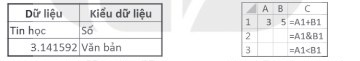
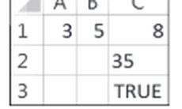
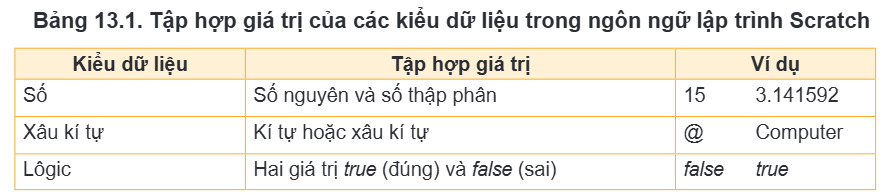
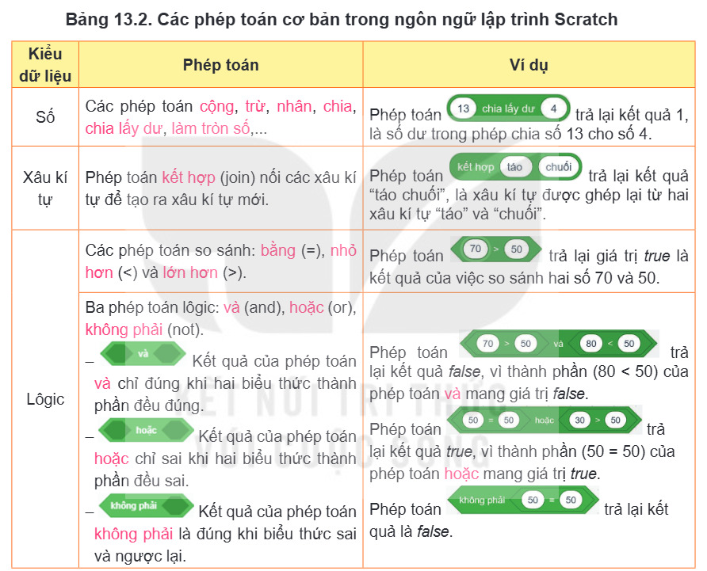
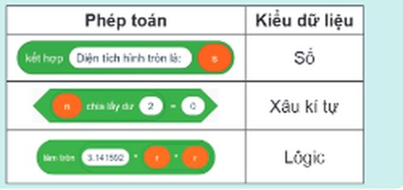
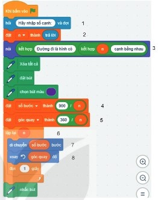
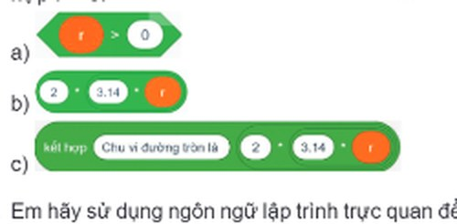

Dành cho giáo viên
Theo dõi lớp
| Học sinh / Nhóm | Đã nộp | Cập nhật |
|---|
Bước 1
1 Khởi động
Khám phá Hình ảnh khởi động
Trò chuyện Cùng An, Minh và Khoa
Đoạn trò chuyện gợi mở (không có trong SGK)
An: Lớp 7 mình đã học các kiểu dữ liệu trong bảng tính: số, văn bản, ngày tháng…
Minh: Trong Scratch cũng cần lưu dữ liệu như điểm số, tên người chơi chứ?
Khoa: Đúng vậy, ngôn ngữ lập trình cũng có kiểu dữ liệu, biến và hằng đấy!
Minh: Trong Scratch cũng cần lưu dữ liệu như điểm số, tên người chơi chứ?
Khoa: Đúng vậy, ngôn ngữ lập trình cũng có kiểu dữ liệu, biến và hằng đấy!
Khởi động Kiểu dữ liệu trong bảng tính
Trong chương trình Tin học lớp 7, em đã được học về các kiểu dữ liệu trong phần mềm bảng tính. Em hãy cho biết đó là những kiểu dữ liệu nào.
Ghi bài Khởi động
Sau khi thầy cô chốt, em chép nội dung dưới đây vào vở.
Bước 2 · Hình thành kiến thức mới
2.1 Kiểu dữ liệu
Hoạt động 1 Kiểu dữ liệu
1. Em hãy ghép mỗi dòng ở cột Dữ liệu với một dòng phù hợp ở cột Kiểu dữ liệu trong Hình 13.1. 2. Em hãy nhập dữ liệu và công thức theo mẫu trong Hình 13.2 vào phần mềm bảng tính và cho biết kết quả được hiển thị ở các ô tính C1, C2 và C3.

Nhập công thức vào các ô C1, C2, C3 của bảng tính mô phỏng (gõ =A1&B1 để ghép, =A1<B1 để so sánh).
Đọc hiểu Kiểu dữ liệu và phép toán

Đọc mục 1 (SGK trang 76–77). Trong Hình 13.1, Tin học là dữ liệu thuộc kiểu văn bản, 3.141592 là dữ liệu thuộc kiểu số. Các công thức ở các ô tính C1, C2 và C3 trong Hình 13.2 trả lại kết quả như Hình 13.3: ô C1 thực hiện phép cộng số 3 và số 5, cho kết quả 8 là một giá trị số; ô C2 thực hiện phép ghép kí tự 3 và kí tự 5, cho kết quả là xâu kí tự 35; ô C3 kiểm tra xem số 3 có nhỏ hơn số 5 hay không, cho kết quả TRUE (đúng) là giá trị thuộc kiểu lôgic.
Trong các ngôn ngữ lập trình, dữ liệu được phân loại thành những kiểu khác nhau để có thể lưu trữ và áp dụng những phép toán phù hợp. Số được phân loại thành kiểu số nguyên hoặc số thực, văn bản được phân loại thành kiểu kí tự hoặc xâu kí tự, các điều kiện hay các phép so sánh được phân loại thành kiểu lôgic,… Mỗi kiểu dữ liệu bao gồm một tập hợp giá trị và một số phép toán trên những giá trị đó. Ngôn ngữ lập trình Scratch có ba kiểu dữ liệu là kiểu số, kiểu xâu kí tự và kiểu lôgic. Mỗi kiểu dữ liệu được trang bị một số phép toán. Ngược lại, mỗi phép toán đều cho kết quả là giá trị thuộc một kiểu dữ liệu nhất định.
Trong các ngôn ngữ lập trình, dữ liệu được phân loại thành những kiểu khác nhau để có thể lưu trữ và áp dụng những phép toán phù hợp. Số được phân loại thành kiểu số nguyên hoặc số thực, văn bản được phân loại thành kiểu kí tự hoặc xâu kí tự, các điều kiện hay các phép so sánh được phân loại thành kiểu lôgic,… Mỗi kiểu dữ liệu bao gồm một tập hợp giá trị và một số phép toán trên những giá trị đó. Ngôn ngữ lập trình Scratch có ba kiểu dữ liệu là kiểu số, kiểu xâu kí tự và kiểu lôgic. Mỗi kiểu dữ liệu được trang bị một số phép toán. Ngược lại, mỗi phép toán đều cho kết quả là giá trị thuộc một kiểu dữ liệu nhất định.


Chạy chương trình dưới đây để xem kết quả các phép toán của Bảng 13.2. Em có thể sửa số trong các ô, hoặc bấm nút ▾ trong một ô để đặt một phép toán khác vào.
Câu hỏi SGK trang 77

Ghi bài 1. Kiểu dữ liệu
Sau khi thầy cô chốt, em chép nội dung dưới đây vào vở.
Bước 2 · Hình thành kiến thức mới
2.2 Hằng, biến, biểu thức
Hoạt động 2 Hằng, biến, biểu thức
Trong Bài 12, em đã tạo ra chương trình để chú Bọ rùa di chuyển theo đường đi là một tam giác đều. Làm thế nào để tổng quát bài toán với đường đi của nhân vật là một hình đa giác đều có số cạnh bất kì được nhập vào từ bàn phím?
Đọc mục 2 (SGK trang 78). Trong lập trình, biến được dùng để lưu trữ giá trị có thể thay đổi trong khi thực hiện chương trình. Biến được nhận biết qua tên của nó. Ví dụ: số cạnh của hình mà nhân vật di chuyển trong bài toán tổng quát ở Hoạt động 2 là một biến, nó được đặt tên n và lưu trữ một giá trị số, chẳng hạn số 6. Hằng là giá trị không đổi trong quá trình thực hiện chương trình. Chẳng hạn, 3.14 là hằng kiểu số (hằng số); “Xin chào!” là hằng kiểu xâu kí tự; true là hằng kiểu lôgic;… Mỗi hằng thuộc một kiểu dữ liệu nhất định. Biểu thức là sự kết hợp của biến, hằng, dấu ngoặc, phép toán và các hàm để trả lại giá trị thuộc một kiểu dữ liệu nhất định. Chẳng hạn, chu vi của đường tròn bán kính r có thể được tính gần đúng bằng biểu thức kiểu số 2 × 3.14 × r.
Câu hỏi SGK trang 78
Em hãy chỉ ra hằng, biến, biểu thức và kiểu dữ liệu tương ứng được sử dụng trong chương trình ở Hình 13.4. (Chương trình Hình 13.4 có trong mô phỏng ở phần Thực hành.)

Ghi bài 2. Hằng, biến, biểu thức
Sau khi thầy cô chốt, em chép nội dung dưới đây vào vở.
Bước 2 · Thực hành
2.3 Thực hành: Sử dụng hằng, biến, biểu thức trong chương trình
Nhiệm vụ Đường đi là đa giác đều có n cạnh
Mở tệp chương trình VeHinh.sb3 em đã lưu ở Bài 12, bổ sung các câu lệnh để được chương trình nâng cấp điều khiển nhân vật di chuyển theo hình có số cạnh nhập vào từ bàn phím như Hình 13.4. Hướng dẫn: Bước 1. Mở tệp chương trình VeHinh.sb3 trong Scratch, chọn chế độ hiển thị tiếng Việt. Lưu tệp với tên mới là DuongDi.sb3. Bước 2. Nháy chuột vào nhóm lệnh Các biến số, tạo các biến n, số bước, góc quay. Bước 3. Nháy chuột vào nhóm lệnh Cảm biến, Các biến số, Hiển thị và hoàn thành lệnh 1, 2, 3 của chương trình. Bước 4. Nháy chuột vào nhóm lệnh Các phép toán để tạo hai biểu thức 900 / n và 360 / n. Bước 5. Nháy chuột vào nhóm lệnh Các biến số, kéo thả và hoàn thành hai câu lệnh 4, 5. Bước 6. Nháy chuột vào nhóm lệnh Các biến số, kéo thả các biến vào vị trí tương ứng trong các câu lệnh 6, 7, 8. Bước 7. Nháy chuột vào nút lá cờ để chạy chương trình và xem kết quả.
Trên mô phỏng (đã mở sẵn VeHinh.sb3 của Bài 12): gõ tên biến rồi bấm Tạo một biến; thêm khối hỏi … và đợi, đặt … thành …; trong ô giá trị bấm ▾ để đặt trả lời, một biến, hoặc phép toán ( ) / ( ) vào ô đó. Chạy và nhập số cạnh ở ô bên dưới sân khấu.
Chương trình mẫu Hình 13.4 để so sánh (có thể chạy thử):
Ghi bài 3. Thực hành
Sau khi thầy cô chốt, em chép nội dung dưới đây vào vở.
Bước 3
3 Luyện tập
Luyện tập Đường tròn
1. Giả sử r là biến lưu giá trị của bán kính hình tròn. Em hãy cho biết giá trị trả lại của các biểu thức sau và kiểu dữ liệu của chúng trong ngôn ngữ lập trình Scratch với trường hợp r = 5.

2. Em hãy sử dụng ngôn ngữ lập trình trực quan để viết chương trình tính chu vi đường tròn, diện tích hình tròn với giá trị của bán kính được nhập vào từ bàn phím, thông báo kết quả ra màn hình.
Ghi bài Luyện tập
Sau khi thầy cô chốt, em chép nội dung dưới đây vào vở.
Bước 4
4 Vận dụng
Vận dụng Bài toán của môn học khác
Em hãy viết chương trình Scratch của riêng mình để giải quyết một bài toán cụ thể trong một môn học như Khoa học tự nhiên, Toán,… trong đó có sử dụng hằng, biến và biểu thức để thực hiện thuật toán.
Ghi bài Vận dụng
Sau khi thầy cô chốt, em chép nội dung dưới đây vào vở.